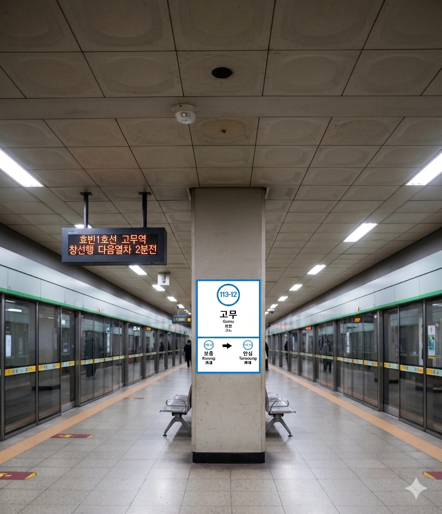

효빈 도시철도 1호선 113-12번. 효빈광역시 탄성군 탄성읍 고무리 56지하에 위치한 역이다.
탄성읍 관내 역들 중 유일하게 지하에 건설된 역이다. 원래는 지상으로 지으려 했으나, 마을 중심부와의 고도 차이(단차) 문제로 인해 어쩔 수 없이 땅을 파고 들어갔다. 덕분에 탄성군 구간 중에서는 건설비가 가장 많이 들어간 '귀하신 몸'이 되었다.
전형적인 평화로운 농촌 마을인 고무리의 중심부에 있다. 이름은 고무역인데 고무 공장은 눈을 씻고 찾아봐도 없다. 주요 시설로는 고무리 회관과 고무초등학교가 역 인근에 위치해 있다.
1 고무역 출구 정보 | ||
|---|---|---|
| 번호 | 주요 시설 및 방향 | 비고 |
| 1 | 고무리 회관, 고무리 마을회관 방면 | - |
| 2 | 고무리 남측 방면 | - |
| 3 | 고무초등학교, 탄성읍 방면 | - |
탄성군 외곽 마을인 만큼 이용객은 매우 적은 편이다. 가끔은 공기가 승객보다 많아 보일 때도 있다(...)
| 연도별 일평균 이용객 (고무역) | ||
|---|---|---|
| 연도 | 이용객 수 (명) | 비고 |
| 2020년 | - | 집계 없음 |
| 2021년 | - | 집계 없음 |
| 2022년 | - | 집계 없음 |
| 2023년 | - | 집계 없음 |
| 2024년 | - | 집계 예정 |

| 보통 ↑ | ||||
하 행 |
ㅣ | ㅣ | ㅣ | 상 행 |
| ↓ 탄성 | ||||
| 상 | 1 효빈 도시철도 1호선 | 곽암해수욕장 · 곽산 · 창선 방면 |
| 하 | 1 효빈 도시철도 1호선 | 승남해수욕장 방면 |
고무역은 탄성군(6권역) 외곽에 위치함에도 불구하고, 도심과 타 권역을 연결하는 버스 노선들이 꽤 많이 정차한다.
| 구분 | 노선 번호 (순방향) | 노선 번호 (역방향) | 비고 (경유 권역) |
|---|---|---|---|
| 급행 | 6 | 06-1 | 급행 (전 권역 미적용) |
| 간선 | 14, 41 | 14, 41 | 1권역 / 4권역 연계 |
| 지선 | 141, 371, 672, 681 | 411, 731, 762, 861 | 총 6개 권역 연계 |